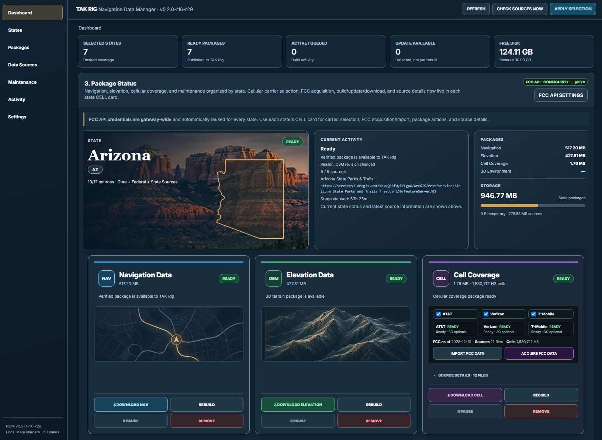
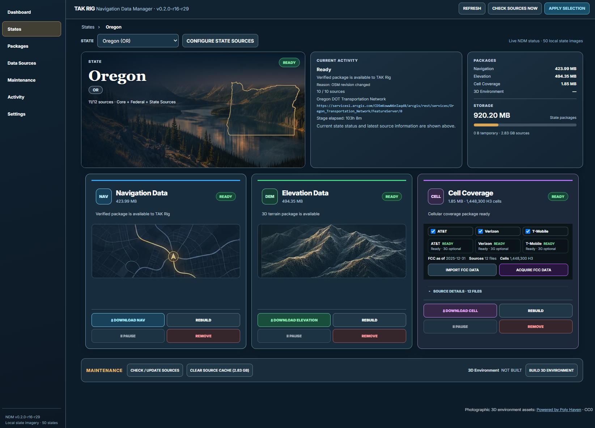
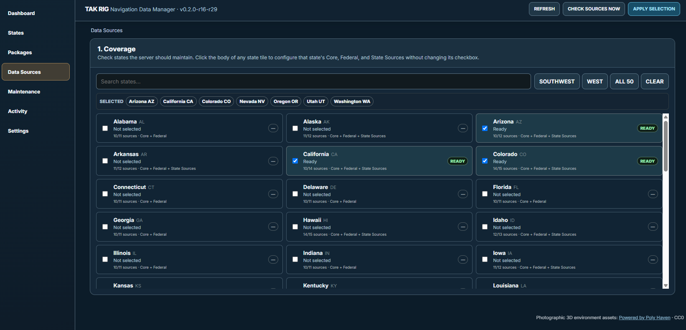
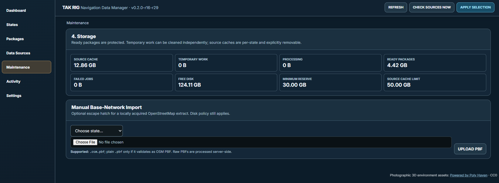
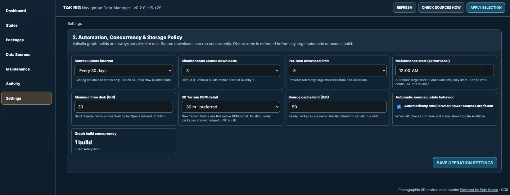

Navigation Data Manager
Interface Overview
Explore the web interface for preparing and maintaining offline navigation, elevation, terrain, and cellular coverage data for TAK Rig.
Dashboard
Monitor state selections, ready packages, storage, build activity, and the navigation, elevation, and cellular data packages in one view.

Select the screenshot to open it at full resolution.State package details
Review individual state status, source details, package sizes, and controls for downloading or rebuilding each data type.

Select the screenshot to open it at full resolution.Coverage & data sources
Browse all 50 states, select the regions to maintain, and configure core, federal, and state-specific sources.

Select the screenshot to open it at full resolution.Maintenance & storage
Inspect source cache, ready packages, free disk space, and upload a local OpenStreetMap PBF when needed.

Select the screenshot to open it at full resolution.Settings & automation
Set automatic source checks, download concurrency, disk reserve, cache limits, and native DEM detail.

Select the screenshot to open it at full resolution.